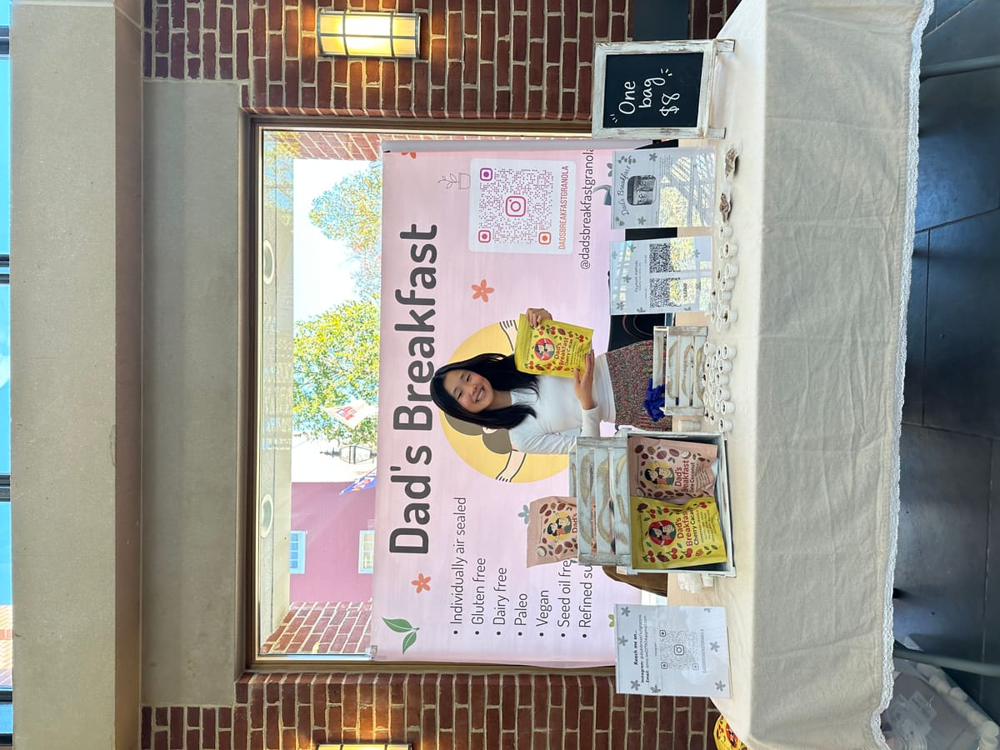
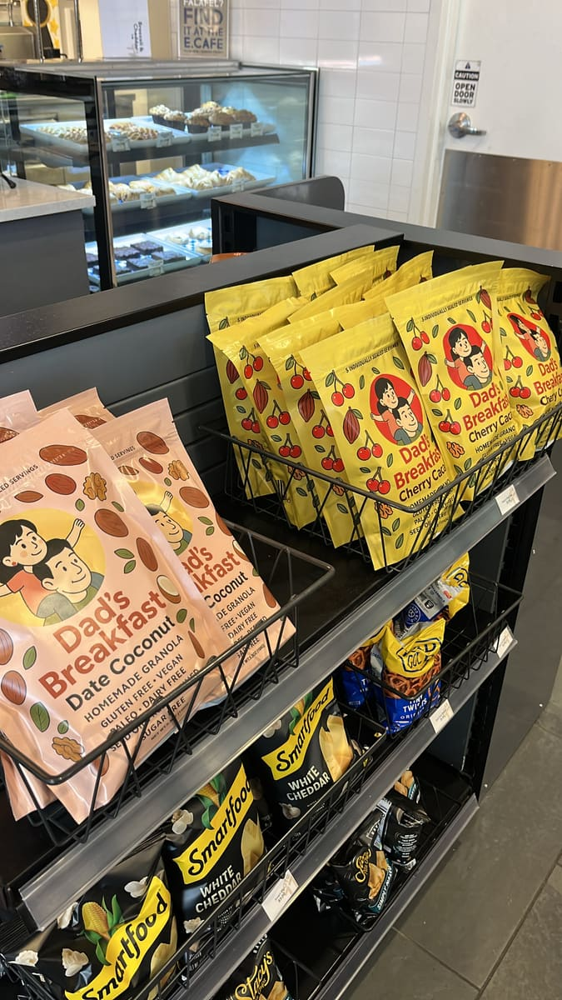

Our Story
How It Started
Dad's Breakfast began in the most personal way: in my own kitchen, making granola for my dad.
A few years ago, he was searching for a breakfast that felt simple, nourishing, and easy to eat every day. As someone who has always loved baking, I started experimenting with recipes and making granola just for him. What began as a small gesture quickly became his daily routine. Seeing how much he enjoyed it inspired me to share it with others.

Sharing Dad's Breakfast at the farmers market.
From Kitchen to Business
After completing my first year of college, I decided to turn that idea into a business. I applied for summer funding to launch Dad's Breakfast and was initially rejected. Instead of giving up, I sought feedback, strengthened my plan, and applied again. That persistence paid off: I received seed funding and officially launched the business that summer.
From the beginning, my goal has been to create granola made with whole, recognizable ingredients that support a variety of dietary needs. Each batch is gluten-free, dairy-free, vegan, and refined sugar-free. I focus on simple foods that fuel your day without unnecessary additives.

Now available on campus at the Coop.
Growing, One Batch at a Time
I first operated under cottage food laws in my home state, selling at local farmers' markets. Since then, I have registered as an LLC, secured a licensed commercial kitchen, and expanded onto my college campus. Every weekend I continue to make small batches by hand, maintaining the homemade quality that started it all.
As Dad's Breakfast grows, I hope to share my granola with customers beyond my campus community. Launching an online platform allows me to reach more people while continuing to produce the same carefully crafted product that began in my family kitchen.

Connecting with customers at the local farmers market.
Why Air-Sealed Packs?
What truly sets Dad's Breakfast apart is how each serving is individually air-sealed.
Nuts and seeds naturally contain oils that can oxidize when exposed to air, which affects both freshness and flavor. By air-sealing every portion, I protect the ingredients from oxidation and preserve the taste and quality of each batch.
The individual packs also make busy mornings easier. They are convenient for taking on the go, help with portion control, and ensure that every serving is as fresh as the first. It's a small detail that makes a meaningful difference in both quality and experience.

Each serving individually sealed for maximum freshness.
Ready to try it?
Experience the freshness of individually air-sealed, grain-free granola.
Shop Granola